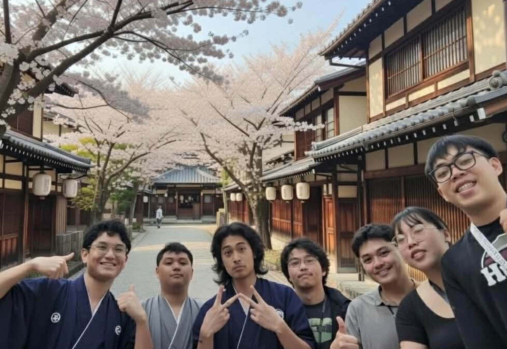
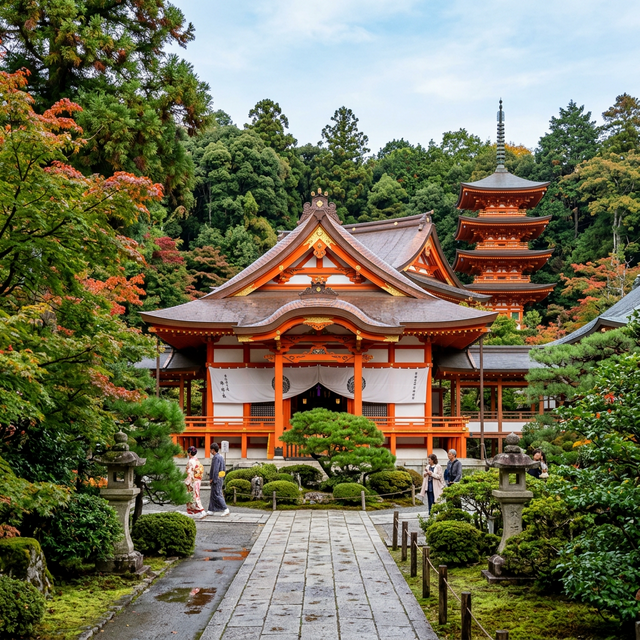
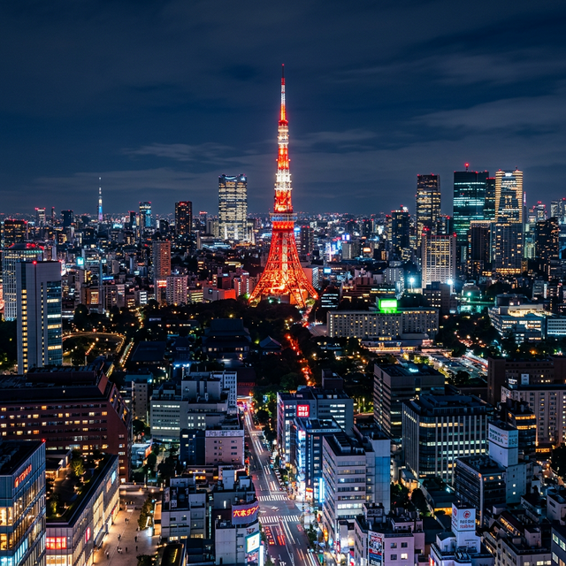
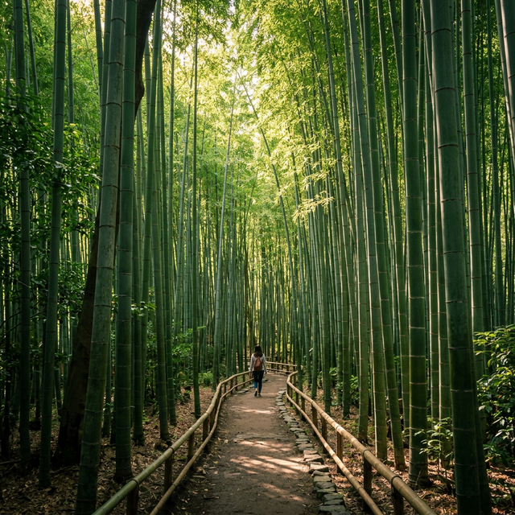
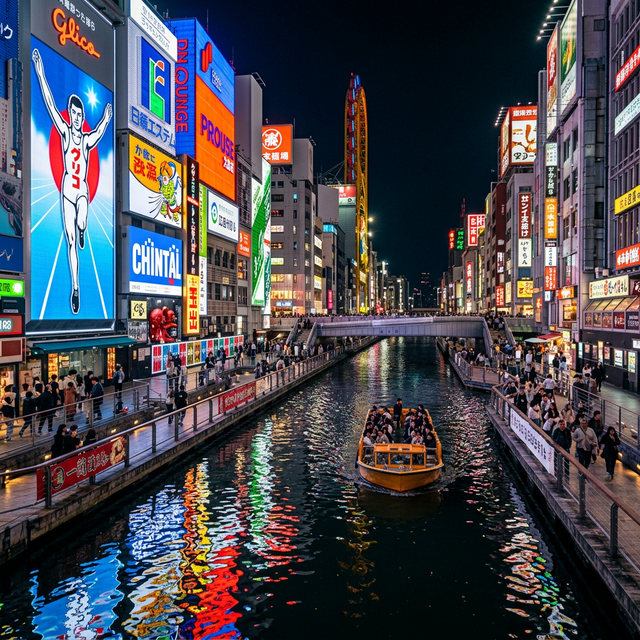

Japan is a place where the ancient and the futuristic coexist in perfect balance. From the neon-lit skyscrapers of Shinjuku to the silent tea houses of Kyoto, every corner of this island nation tells a story of artistic precision and spiritual depth.
Whether you seek the rush of a bullet train or the stillness of a mountain shrine, Japan offers an experience that is as profound as it is unforgettable.

Explore the most iconic regions of Japan

The electric heart of Japan. A sprawling metropolis of neon lights, world-class dining, and infinite energy.

The cultural capital. Home to thousands of temples, traditional geisha districts, and serene gardens.

A culinary paradise. Famous for its vibrant street food, friendly locals, and iconic Dotonbori canal.
The wild north. A haven of natural beauty, powdery snow, volcanic springs, and vast landscapes.